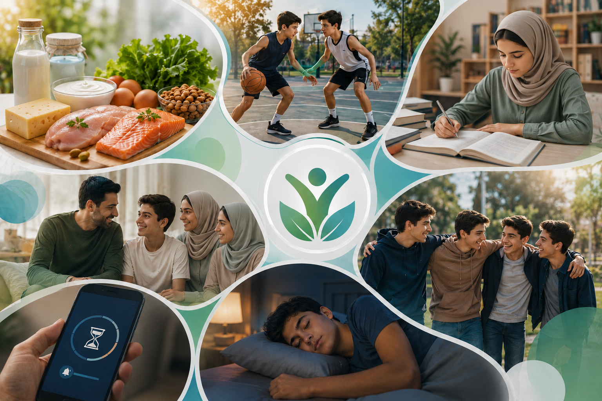

سبک زندگی سالم مجموعهای از رفتارها و عادتهایی است که باعث حفظ سلامت جسم، روان و روابط اجتماعی میشود. تغذیه مناسب، خواب کافی، ورزش، مدیریت استرس و استفاده صحیح از فضای مجازی از مهمترین اجزای آن هستند.
مصرف میوه، سبزیجات و غذاهای سالم انرژی و تمرکز را افزایش میدهد.
۸ تا ۱۰ ساعت خواب شبانه برای رشد و یادگیری نوجوانان ضروری است.
ورزش منظم باعث تقویت قلب، عضلات و افزایش نشاط میشود.
مدیریت زمان استفاده از تلفن همراه باعث افزایش تمرکز و کیفیت خواب میشود.
آرامش ذهن و کنترل استرس نقش مهمی در موفقیت و شادی دارند.
تنها ۳۰ دقیقه فعالیت بدنی در روز میتواند خطر بسیاری از بیماریها را کاهش دهد و باعث بهبود خلقوخو و تمرکز شود.